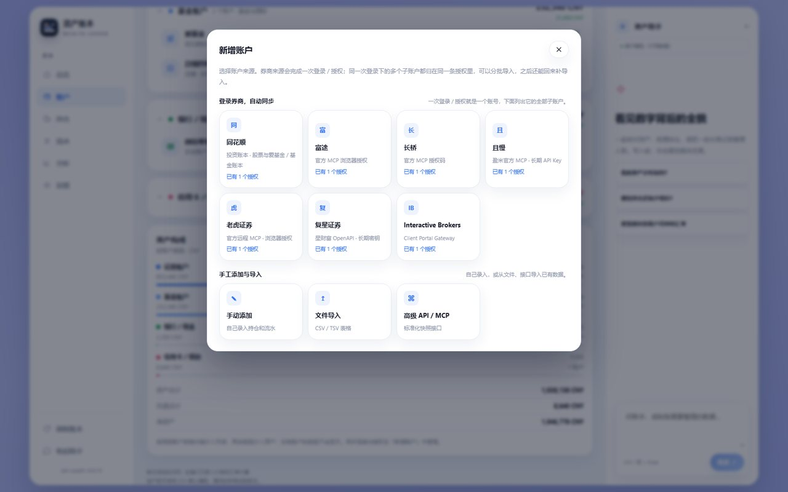
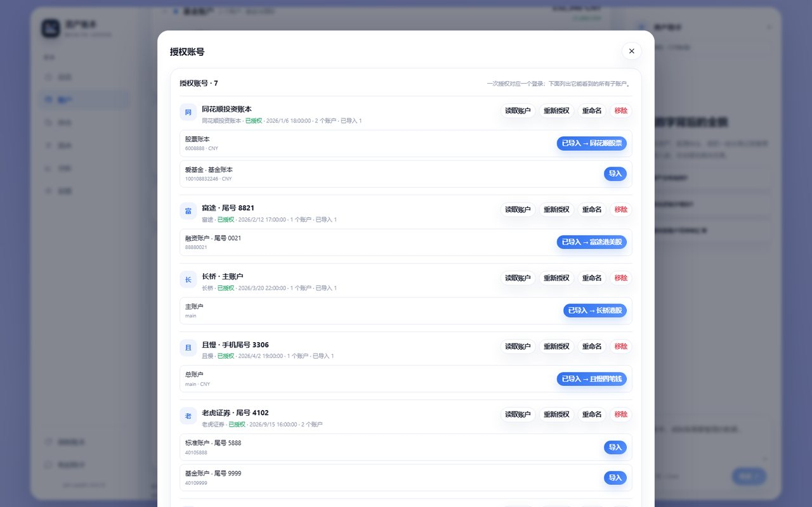
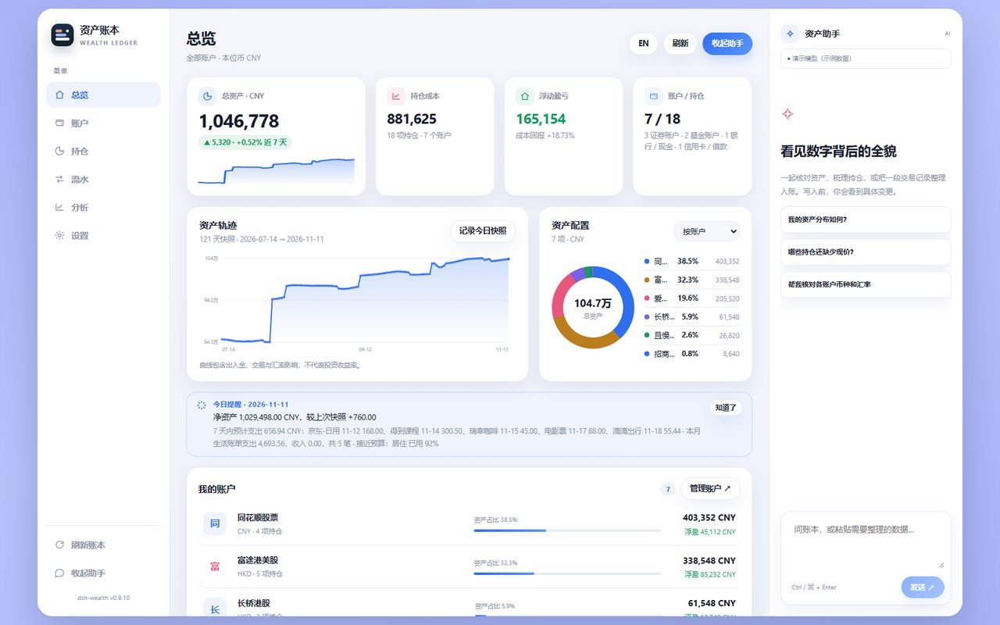
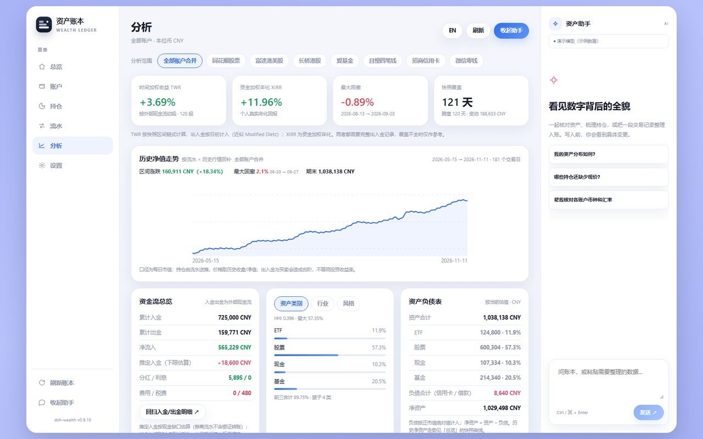
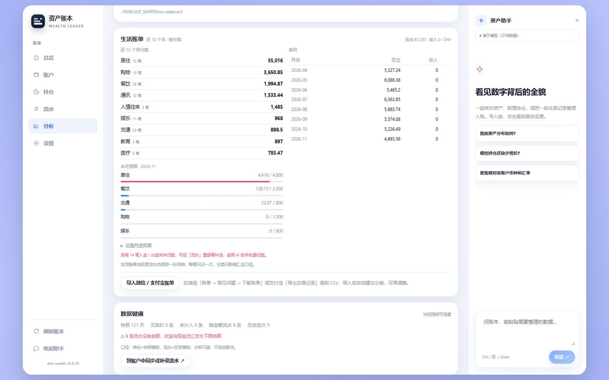
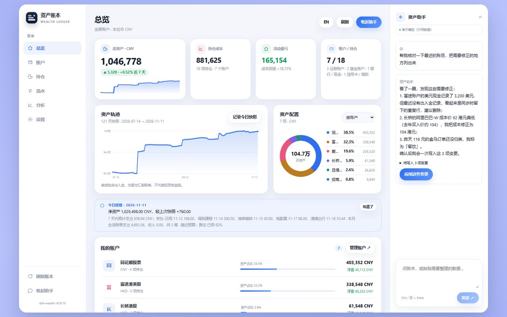
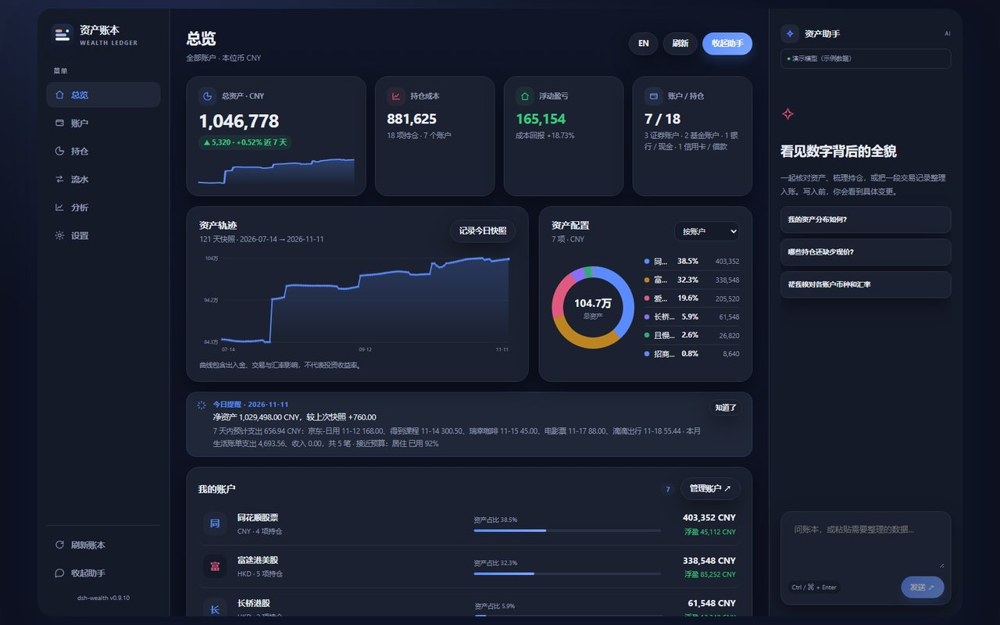

CONNECT
一次登录，就是一条授权。
同一个券商登录一次，下面所有子账户都列在同一张卡上：想导哪个导哪个，可重命名、重新授权、随时移除。 富途、长桥、且慢、老虎、复星都走官方 OAuth / MCP，插件不接触密码。
- 同花顺官方 MCP：股票账本 + 爱基金 + 基金账本
- 富途官方 MCP 或本机 OpenD，二选一
- 导入后每天 21:00 自动同步，也可设为仅手动
新增账户

授权账号

DEEPSEEK HARNESS PLUGIN · LOCAL-FIRST
一次授权，连上同花顺、富途、长桥、且慢、老虎、复星与 IB。 持仓、流水、生活账单收进同一份本机账本，再让 AI 帮你核对它。

01 · WHY
券商一个、基金一个、支付软件又一个。每个 App 都想当你的「主页」，但没有一个真的算得清你。
同花顺、富途、长桥、基金平台、微信零钱、信用卡——总资产要靠手工加。dsh-wealth 用一次授权把它们接进同一本账。
App 只告诉你「持仓涨了多少」，不告诉你出入金之后的真实回报。这里给出 TWR 与 XIRR 双口径，以及最大回撤。
大多数 AI 只能听你口述。这个助手直接读你的账本，改动先出草案，你点头才写入。
02 · WHAT YOU GET
不是行情终端，也不是记账玩具。它回答三个问题：我有多少钱、钱从哪来、最近花到哪去。
CONNECT
同一个券商登录一次，下面所有子账户都列在同一张卡上：想导哪个导哪个，可重命名、重新授权、随时移除。 富途、长桥、且慢、老虎、复星都走官方 OAuth / MCP，插件不接触密码。


MEASURE
时间加权收益 TWR 剔除入金出金的影响，让不同账户可以公平比较； 资金加权年化 XIRR 才是你自己的真实年化。再配上最大回撤、资金流总览与资产负债表。

LIVE WITH IT
导入微信 / 支付宝账单，自动按餐饮、交通、居住、购物分类。月度预算、超支提醒、年度现金流—— 和投资收益共用一份归档，不再「投资账本很漂亮，但不知道钱花哪了」。

ASK IT
「帮我核对最近的账目」——它会翻你的持仓、流水和汇率，指出不一致的地方， 然后把修改列成待写入的变更。你点「应用」，它才落盘；落盘前还会校验账本版本。
cli.mjs 读写同一账本


03 · SOURCES
优先走官方授权，不抓 Cookie、不存密码。没有官方接口的来源，也可以用文件和手工补齐。
04 · LOCAL-FIRST
账本是一个本地 JSON 文件，凭据用 AES-256-GCM 加密。同步只走你自己配置的券商官方接口，没有中转服务器，也没有账号体系。
看看它把文件放在哪 ↗05 · GET STARTED
在 DeepSeek Harness 的插件页搜索 dsh-wealth 安装并重启。
「账户 → ＋ 新增账户」，选券商，完成一次登录或扫码授权。
勾选子账户导入，然后问右侧助手：「我的资产分布如何？」
COMMAND LINE
已经用 DSH CLI 管理 profile？一条命令安装：
dsh plugin --profile <profile> add dsh-wealth首次安装长桥原生依赖可能需要 3–5 分钟；若被 pnpm 拦截 protobufjs 构建脚本，按插件页提示允许即可。
06 · COMPARE
| dsh-wealth | Ghostfolio | Portfolio Performance | 随手记 / MoneyWiz | |
|---|---|---|---|---|
| 中国市场券商直连 | ✓ | — | — | — |
| 微信 / 支付宝账单 | ✓ | — | — | ✓ |
| 投资 + 记账同一份账本 | ✓ | — | — | 部分 |
| 历史净值回补 | ✓ | 需自部署 | ✓ | — |
| AI 直接读改写账本 | ✓ | — | — | — |
| 数据留在本机 | ✓ | 自部署可实现 | ✓ | 部分 |
没有全能选手。dsh-wealth 的选择是：把投资与生活放进同一份账本，再让 AI 直接操作它。
07 · HONEST LIMITS
把边界写在前面，比事后解释更省时间。